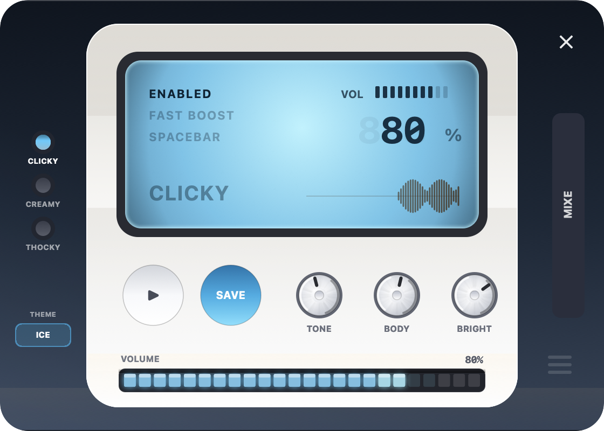

KLACK
Every key, a sound
A native macOS menu-bar app that plays mechanical-keyboard sounds on every keystroke. Three packs recorded from a real board, a live mixer to design your own, and an importer for your actual keyboard.
Free · open source (MIT) · macOS 12 or later · Apple silicon and Intel · 1.2 MB
Turn the sound on. Every click you hear is the actual WAV the app plays; the panel is rendered from source, not screen-recorded.
The reel — how it was made
An 84-second film about the process: the idea, the research into three kinds of click, the control panel, and the first real keystroke. Posted on Instagram; the full-resolution cut is below.
Install in three steps
- Open the DMG, drag Klack to Applications.
Nothing else is installed anywhere. Delete the app to uninstall.
- First launch: right-click Klack → Open → Open.
Klack is signed but not notarized, so a plain double-click says "cannot be opened". Right-click → Open is Apple's own route past that; you do it once. If it still refuses:
xattr -dr com.apple.quarantine /Applications/Klack.app - Allow Input Monitoring when asked.
Flip Klack on in System Settings → Privacy & Security → Input Monitoring and start typing. The app notices within three seconds — no relaunch.
What it does
Hears every key
Key down and key up each play a sample; the space bar gets its own deeper pair, because on a real board it does.
Three recorded packs
Clicky, Creamy, Thocky — recorded from a real keyboard and sliced into variants so fast typing reads as a run, not a stutter.
Design your own
Six knobs — pitch, body, brightness, snappiness, attack, reverb — re-render the click live. Save it as a pack.
Import your keyboard
Record yourself typing, run one script, get a pack built from your actual switches.
Stays out of the way
Menu-bar only, no Dock icon. Settings survive relaunch. A second launch just focuses the running copy.
Listen-only, by construction
The event tap cannot modify or block input. Klack never logs, stores or transmits keystrokes. There is no network code in the app.
Four themes




If the toggle is on but it hears nothing
macOS is holding a permission record for an older build and matching the new one against it. Clear it; the dialog comes back within seconds:
tccutil reset ListenEvent com.vinaypathak.klackAlso in the repo
Windows
A lean tray-app port is in progress under windows/. Cross-compiled, not yet tested on a Windows machine — it will say so until it has been.
Android
Phones don't let an app hear other apps' keys, so the Android version is a keyboard: Klack Keyboard, under android/. In progress.